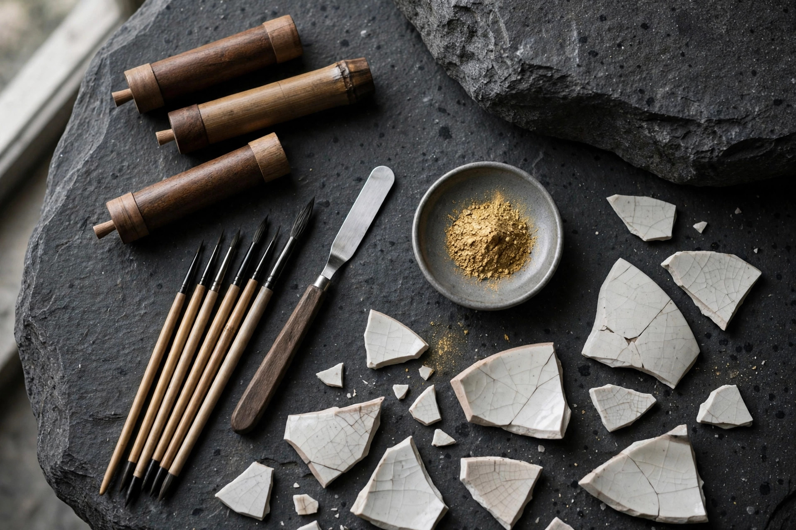

金継ぎキットの選び方 ― 本漆キットと合成うるしキットの違い

結論
本漆キットは硬化に時間がかかりますが、仕上がりと耐久性に優れ、食器として使う器に向く本物志向の選択です。合成うるしキットは乾燥が速く手軽でかぶれにくい反面、用途に注意が必要です。初心者は「直した器を食器として使うかどうか」を基準に選ぶと失敗しにくくなります。
金継ぎキットを探すと、「本漆」と「合成うるし（新うるしなど）」という2つの系統があることに気づきます。見た目は似ていても、素材も、扱い方も、向いている用途もまったく別物です。選び方を間違えると、「食器に使えなかった」「思ったより時間がかかった」というミスマッチが起こります。違いを表で整理します。
本漆キットと合成うるしキットの比較
| 項目 | 本漆キット | 合成うるしキット |
|---|---|---|
| 素材 | 漆の木から採れる天然の本漆 | 合成樹脂などを主成分とする漆風の塗料 |
| 仕上がりと耐久性 | 深みのある仕上がり。硬化後は耐水・耐熱性に優れ長持ちしやすい | 手軽に金継ぎ風の見た目が得られる。長期の耐久性は本漆に劣るとされる |
| 乾燥時間 | 湿度のある環境で硬化を待つため、工程ごとに数日〜、全体で数週間かかることも | 比較的短時間で乾くものが多く、短期間で完成させやすい |
| かぶれリスク | 硬化前の生漆は体質によりかぶれることがある。手袋必須 | 本漆のようなかぶれは基本的に起きにくいとされる |
| 価格帯の目安 | 1万円前後〜2万円前後が目安 | 数千円前後からが目安 |
| 向いている人 | 本物の技法を学びたい方、食器として長く使いたい方 | まず体験したい方、観賞用の器や小物を直したい方 |
価格帯はいずれも一般的な目安で、付属する金粉が本金か代用粉か、道具の充実度によって変わります。
それぞれの特徴をもう少し詳しく
本漆キット ― 時間はかかるが「本物」
本漆は、湿気と反応して固まる天然素材です。急いで進めることはできず、接着、下地作り、粉を蒔く工程ごとに硬化を待ちます。その分、完全に硬化した漆は丈夫で、古くから漆器が食器として使われてきた実績があります。手間を工程として楽しめる方、そして直した器で食事をしたい方に向いています。
合成うるしキット ― 手軽さが魅力、用途は要確認
「新うるし」などと呼ばれる合成タイプは、乾きが速く、かぶれの心配も少なく、週末の作業で完成まで進められる手軽さが魅力です。一方で、製品によっては食品が直接触れる用途や熱への適合が限定される場合があります。花器や置物など、口に触れない器から始めるのが安心です。
初心者の選び方 ― 結論
- 直した器で食べたり飲んだりしたい → 本漆キットを選ぶ。
- まずは金継ぎを体験してみたい → 合成うるしキットで、観賞用の器から始める。
- どちらか迷う → 最初の1点は安い器で練習し、素材の扱いに慣れてから本漆に進む段階式もおすすめです。
どちらのキットにも共通するのは、割れ口の清掃やマスキングなど下準備の丁寧さが仕上がりを決めることです。素材の違いを理解したうえで、自分の器と目的に合う方を選んでください。
研屋では、天然砥石とあわせて漆・金継ぎ材料の仲介も行っています。本漆や金粉など材料の相談は、金継ぎ材料のご案内（事業紹介）をご覧ください。砥石をお探しの方は砥石データベースもどうぞ。具体的なご相談はお問い合わせから受け付けています。
よくある質問
- 初心者は本漆キットと合成うるしキットのどちらを選べばいいですか？
- まず手軽に試したい方は合成うるしキット、食器として長く使いたい方や本物の技法を学びたい方は本漆キットが向いています。直す器の用途から逆算して選ぶのがおすすめです。
- 合成うるしで直した器は食器として使えますか？
- 製品によって食品への適合が異なり、口に触れる部分や熱いものを入れる用途には向かないとされるものもあります。購入前にメーカーの用途表示を必ず確認してください。
- 本漆はなぜかぶれると言われるのですか？
- 硬化前の生漆に含まれる成分が皮膚に触れると、体質によってはかぶれることがあります。作業時は手袋を着用し、素手で触れないことが大切です。完全に硬化した後は通常、その心配は少なくなります。
- 金継ぎキットの価格帯はどのくらいですか？
- 合成うるしキットは数千円前後から、本漆キットは1万円前後〜2万円前後が目安とされます。金粉が本物か代用粉かでも価格は変わります（いずれも一般的な目安です）。